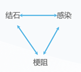
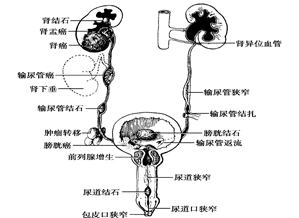
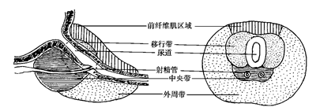

# 第五十一篇 尿路梗阻
# 一、概述
・尿液在肾内形成后，经过肾盏、肾盂、输尿管、膀胱和尿道排出体外。
・尿液的正常排出，有赖于尿路管腔通畅和排尿功能正常。
・泌尿系统本身及其周围的许多疾病都可引起尿路梗阻，造成尿液排出障碍，引起梗阻近侧端尿路扩张积水。
・泌尿系统许多疾病与泌尿系梗阻互为因果

# (一) 病因
\1. 尿路结石
\2. 泌尿生殖系统肿瘤
\3. 前列腺增生症
\4. 先天发育异常
\5. 邻近器官病变的压迫和侵犯
\6. 创伤或炎症引起的瘢痕狭窄
\7. 中枢或周围神经受到损伤
\8. 结核
\9. 医源性输尿管梗阻

# (二) 病理生理
# \1. 病 理：
基本病理改变是梗阻部位以上压力增高，尿路扩张积水，长时间梗阻将导致肾积水和肾功能损害。
# \2. 病理生理
# 1) 上尿路梗阻：
① 肾盂内压↑→达到肾小球滤过压→肾小球停止滤过→尿液形成停止，肾血流仍正常；肾 “安全阀” 开放 — 肾盏在穹隆部开始有小裂隙→尿液渗至肾、肾盂周围→肾盂内压 ¯→肾小球滤过恢复→起到保护肾组织的作用→肾组织缺氧、萎缩。
② 慢性梗阻→肾盂扩张、壁变薄→肾乳头萎缩→肾实质萎缩变薄→肾盂容积增大→大水囊。
③ 急性完全梗阻→轻度肾盂扩张，肾实质很快萎缩。
④ 梗阻后肾功能变化：肾小球滤过、肾血流减少；浓缩和酸化尿能力下降。
# 2) 下尿路梗阻：
① 膀胱小梁形成；
② 出现残余尿；
③ 膀胱代偿功能丧失后，出现尿液自膀胱向输尿管反流，引起上尿路梗阻，进而形成肾积水
# 二、肾积水
尿液从肾盂排出受阻，蓄积后肾内压力增高，肾盂肾盏扩张，肾实质萎缩，功能减退，称为肾积水（hydronephrosis）。
肾积水容量超过 1000ml 或小儿超过 24 小时尿液总量时，称为巨大肾积水。
# (一) 临床表现
\1. 表现为原发病变的症状和体征。
\2. 腰痛：隐痛不适或者剧烈绞痛。
\3. 下尿路梗阻继发肾积水主要表现为排尿困难和膀胱不能排空，甚至出现尿潴留。
\4. 不同程度的肾功能损害，严重者出现贫血、乏力、食欲不振、恶心等尿毒症症状。
\5. 肾积水如并发感染，出现寒战、高热、腰痛及尿路刺激症状等。
\6. 孤立肾完全梗阻时可出现无尿。
# (二) 诊断
\1. 超声检查
\2. KUB+IVU
\3. 逆行插管造影
\4. CT
\5. MRU
\6. 肾穿刺顺行造影
\7. 同位素肾图
\8. 膀胱、尿道造影
\9. 内镜检查
# (三) 治疗
\1. 病因治疗：为理想的治疗方法。原则是去除病因，保留患肾。
\2. 先行引流，再去除病因：经皮肾造瘘或者输尿管逆行插管。
\3. 脓肾或巨大肾积水，对侧肾功能良好时：患肾切除。
# 三、尿潴留
# (一) 概念
尿潴留是指膀胱内充满尿液而不能排出，常常由排尿困难发展到一定程度引起。尿潴留分为急性与慢性两种。
# (二) 病因
引起尿潴留的病因很多，可分为机械性和动力性梗阻两类。
\1. 机械性梗阻（最多见）：良性前列腺增生、前列腺肿瘤
\2. 动力性梗阻：膀胱出口、尿道无器质性梗阻病变，尿潴留系排尿动力障碍所致。最常见的原因为中枢和周围神经系统病变，如脊髓或马尾损伤、肿瘤，糖尿病等，造成神经源性膀胱功能障碍引起。
# (三) 临床表现
\1. 急性尿潴留：发病突然，膀胱内充满尿液不能排出，胀痛难忍，辗转不安。
\2. 慢性尿潴留：多表现为排尿不畅、尿频，常有排尿不尽感，有时出现尿失禁现象。少数病人虽无明显慢性尿潴留梗阻症状，但已有明显上尿路扩张、肾积水，甚至出现尿毒症症状，如全身衰弱、食欲不振、恶心、呕吐、贫血、血清肌酐和尿素氮显著升高等。
# (四) 诊断
\1. 根据病史及典型的临床表现诊断。
\2. 体检时耻骨上区常可见到半球形膨隆，用手按压有明显尿意，叩诊为浊音。
\3. B 超检查可以明确诊断。
\4. 尿潴留应与无尿鉴别，后者是指肾衰竭或上尿路完全梗阻，膀胱内空虚无尿。
# (五) 治疗
\1. 急性尿潴留：治疗原则是解除病因，恢复排尿。
\2. 急诊处理：导尿术（是解除急性尿潴留最简便常用的方法）。急性尿潴留病人在不能插入导尿管时，可在局麻下直接或 B 超引导下行耻骨上膀胱穿刺造瘘，持续引流尿液。
\3. 慢性尿潴留：若为机械性梗阻病变引起，有上尿路扩张肾积水、肾功能损害者，应先行膀胱尿液引流；如系动力性梗阻引起，多数病人需间歇清洁自我导尿或耻骨上膀胱造瘘术。
# 四、良性前列腺增生
# (一) 概念
表现为组织学上的前列腺间质和腺体成分的增生、解剖学上的前列腺增大、尿动力学上的膀胱出口梗阻和以下尿路症状（LUTS）为主的临床症状
# (二) 病 因
\1. 老龄 + 有功能的睾丸：是前列腺增生发病的两个重要因素，二者缺一不可。
\2. 受性激素的调控，前列腺间质细胞和腺上皮细胞相互影响，各种生长因子的作用，随着年龄增大体内性激素平衡失调以及雌、雄激素的协同效应等，可能是前列腺增生的重要病因。

# (三) 病 理
\1. 增生的部分为：移行带。
\2. 外科包膜：被压缩的外周腺体。
\3. 膀胱颈部的平滑肌内含有丰富的 α 肾上腺素能受体，受体激活使该处平滑肌收缩，增加尿道阻力。
\4. 膀胱小梁，真、假憩室形成。
# (四) 病理生理
\1. 代偿期：
① 逼尿肌代偿性肥大，
② 膀胱壁增厚，增加收缩力，
③ 出现小梁小室改变
\2. 失代偿期：膀胱壁肌肉萎缩、变薄，张力减退，膀胱残余尿增多，最终出现充盈性尿失禁、尿潴留、膀胱输尿管反流并导致肾功能受损
# (五) 临床表现（LUTS 临床症状）
- 储尿期症状：尿频、尿急、尿失禁、夜尿增多
- 排尿期症状：排尿困难
- 排尿后症状：排尿不尽、尿后滴沥
- 其它症状：血尿、肾积水、肾功能不全感染、结石、腹股沟疝、内痔等
# (六) 诊 断
\1. 国际前列腺症状（I-PSS）评分。
\2. 体检：直肠指检，了解前列腺大小、质地、有无硬结、压痛等。
\3. B 超：大小、结节回声、残余尿。
\4. 尿流动力学：最大尿流率小于 15ml/s。
\5. 血清前列腺特异性抗原 PSA：排除前列腺癌。
\6. 尿道膀胱镜检查
# (七) 鉴别诊断
\1. 前列腺癌：前列腺指诊、PSA、MRI、前列腺穿刺活检
\2. 膀胱颈挛缩：发病年龄较轻、前列腺体积不大、膀胱镜检查
\3. 尿道狭窄：尿道损伤或感染史、尿道造影、膀胱尿道镜检查
\4. 神经源性膀胱功能障碍：神经系统损坏病史、尿动力学检查
# (八) 治疗
\1. 等待观察
\2. 药物治疗
① a 受体阻滞剂：平滑肌张力 ¯，尿道阻力 ¯，排尿症状改善
② 5α 还原酶抑制剂：抑制睾酮向双氢睾酮转变→缩小前列腺体积，改善排尿症状；
③ 植物制剂等。
\3. 手术治疗：经尿道前列腺电切术（TURP）、经尿道激光治疗、开放手术
\4. 其他疗法：球囊扩张等、前列腺动脉栓塞术（PAE）